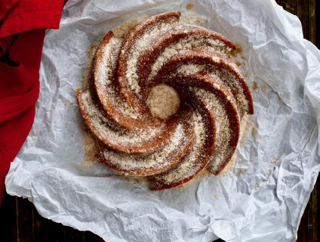

Churro Bundt Cake
Added:Sunday, May 17, 2020 - 1:28pm
By:Simmer + Sauce

For all you sweet treat lovers, here's an excellent recipe for a churro bundt cake that's sure to satisfy all your cravings.
The cinnamon and brown sugar are going to melt in your mouth and leave you so happy that you decided to make this cake.
So, let's get right into the recipe!
Ingredients
For the cake:
- 1/2 cup sour cream
- 1 large egg
- 1/2 cup sugar
- 1 cup all purpose flour
- 1/2 teaspoon baking soda
- dash of salt
- 1 1/2 teaspoons vanilla extract
- 2 tablespoons vegetable oil
- 2 tablespoons unsalted butter, melted
For the topping:
- 1/3 cup sugar
- 2 tablespoons brown sugar
- 1/4 teaspoon cinnamon
- 3 tablespoons unsalted butter, melted
Preparation
For the cake:
- Preheat oven to 350 degrees F. Lightly oil a 6-cup bundt pan and set aside.
- In a medium mixing bowl add the sour cream, egg, vanilla, oil, butter and sugar, mix well to blend.
- Add the flour, baking soda, salt and mix well to incorporate.
- Pour the batter into the prepared baking pan and bake for about 20-25 minutes or until firm tot he touch. Remove from oven and let cool in pan for a few minutes before removing it.
- While the bundt cake is cooling making the topping.
For the topping:
- In a small bowl add the cinnamon, sugar and brown sugar, mix well.
- When the cake is cool, remove it from the pan and place on a serving platter. Using a pasty brush, generously brush the cake all over with the melted butter. Immediately sprinkle with the cinnamon-sugar mixture. Slice and serve.
This recipe is from Foodista.com, made by @simmerandsauce.